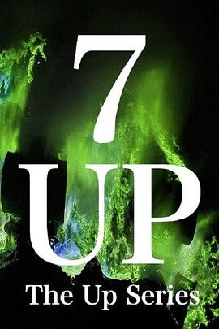
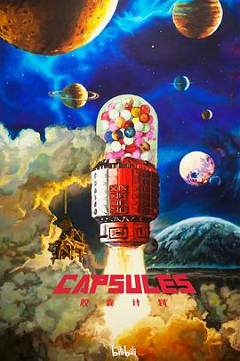
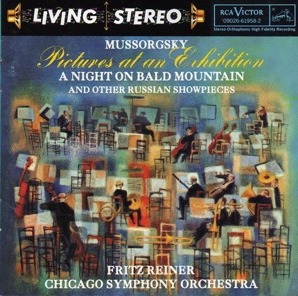

2026年9月
10 条
其中 10 条带正文
广播发布后不可编辑，所以每条都是那一刻的原话。
2026-09-07 16:56:22
说
就反正 是 一篇 私密 日记 用来测试的。
2026-09-07 16:41:42

哇，以人生为维度拍的纪录片
2026-09-06 18:12:31

看了3集，前两集比爱死机差远了，但是第三集《萤惑归途》却是一个很完整的故事，作为身在他国的孩子就很有共鸣~ 期待更多类似质量的作品
2026-09-05 16:53:34
 看过 小黄人与大怪兽 / Minions & Monsters ★★★☆☆
看过 小黄人与大怪兽 / Minions & Monsters ★★★☆☆
含黄量比正传低不少，开始我还以为和怪电公司联动还是啥的，结果就是纯粹搞了本召唤书来召唤怪兽，最后的boss竟然还有点密恐，不知道怎么设计的。。
2026-09-05 16:51:40
 看过 抓特务 ★★★★☆
看过 抓特务 ★★★★☆
剧情挺不错的，看下来也算挺成熟的一个商业片。不知道怎么就给韩红走个面儿给搞砸了，时也，运也，命也。
2026-09-04 20:31:52

没想到《抓特务》里面用这个 II. Promenade 做主题曲呢。听着好熟悉，就是想不起来哪里听过，可能是我的网易云音乐歌单？中文叫《展览会上的图画》，这下子记住了。
2026-09-04 17:37:44
 看过 盗梦空间 / Inception ★★★★★
看过 盗梦空间 / Inception ★★★★★
精彩，真的精彩，开放式结局竟有一丝丝哀伤，下周二去看奥德赛！
2026-09-04 06:48:03
想看 胶囊计划
诶诶诶诶诶，国产爱死机？！才知道
2026-09-04 06:45:35
看过 DEEP：深海 ★★★★☆
在B站夹杂在一堆AI视频里面，竟然是手搓的。AI视频起来后，匠人精神真是越来越难得了。现在感觉做什么都是浮躁的，可能就干干农活、做做木工还有些禅意吧。另外，很多AI视频真的不错，不如最近巨火的《我这一生最大的罪》，就没有豆瓣条目。。。
2026-09-03 07:02:06
想看 希望 / HOPE
评分这么两极分化嘛